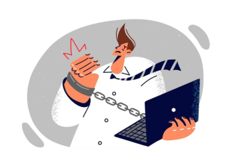

MENOS TELA
MAIS VIDA
A utilização das telas na vida contemporânea passou a ser algo cotidiano. A tecnologia pode ser vantajosa em alguns aspectos, no entanto, acaba sendo prejudicial quando é usada de maneira inadequada e excessiva. Esse uso excessivo está ligado com diversos problemas na saúde mental de idosos, adultos, adolescentes e crianças. Veja a seguir alguns dos malefícios causados:
MALEFÍCIOS CAUSADOS.
-

01 PROBLEMAS DE VISÃO
Uma das principais colaborações do uso excessivo de telas é o surgimento de problemas relacionados a visão, devido ao nível de iluminação emitida pela tela do aparelho, além da possibilidade dos problemas oculares serem potencializados por fatores como a proximidade do aparelho relacionado ao rosto e a quantidade de brilho definida.
-

02 IMPACTOS NO SONO
As telas causam insônia principalmente por emitirem luz azul, que inibe a produção de melatonina, dificultando o sono, e por estimularem o cérebro com conteúdo interativo, mantendo-o em estado de alerta. Isso atrapalha o relaxamento necessário para adormece, tornando o sono mais difícil.
-

03 VÍCIO E DEPENDÊNCIA
O uso excessivo de telas, principalmente para jogos e redes sociais, pode levar à dependência digital, uma condição em que a pessoa se sente obrigada a usar o dispositivo constantemente, mesmo quando isso interfere em suas responsabilidades diárias, como trabalho, estudo ou convivência familiar.
-

04 PROBLEMAS FÍSICOS E MENTAIS
O uso excessivo de telas pode causar uma série de problemas físicos, como dores nas costas, no pescoço e nos ombros, além de contribuir para uma postura inadequada. O sedentarismo também é um fator comum, aumentando o risco de desenvolver doenças crônicas como obesidade e problemas cardíacos. Já nos problemas mentais, pode amplificar a ansiedade e a depressão, especialmente entre jovens, ao prejudicar o bem-estar emocional e aumentar a sensação de isolamento. Além disso, o uso prolongado das telas pode reduzir a capacidade de concentração e afetar o desempenho cognitivo em atividades diárias.
Teste seu nível de depêndencia digitial!
clique no botão “Iniciar teste” abaixo e responda as perguntas.
INICIAR TESTE